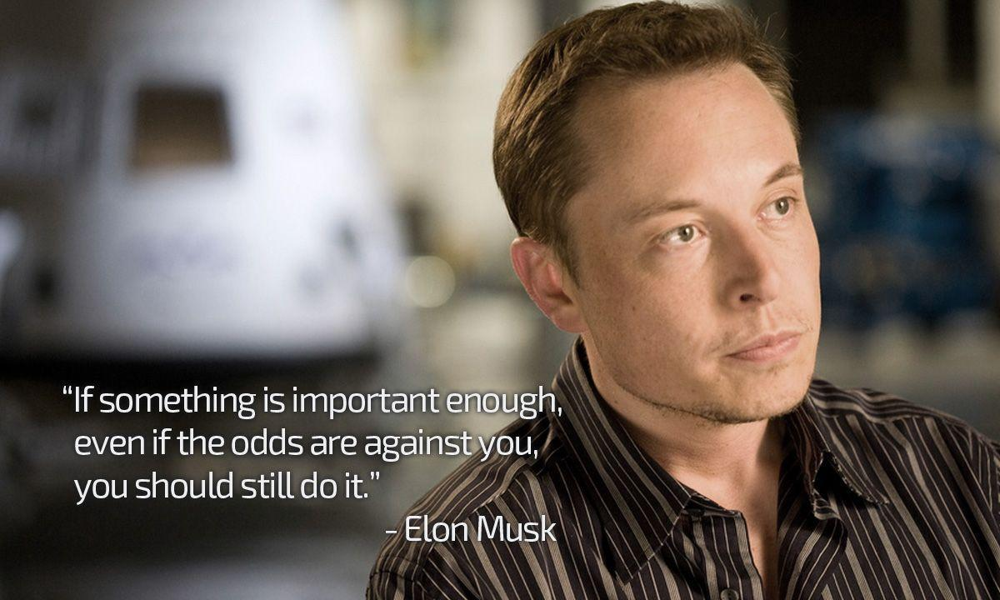

Elon Musk’s Success Story
Elon Musk’s Early Life:
Elon Musk was born on the 28th of June in 1971. He was born in one of the three capital cities of South Africa called Pretoria. He is the oldest of three siblings. Elon Musk’s father, Errol Musk, is a successful engineer while Maye Musk, his mother, was a model and a nutritionist. His brother, Kimbal Musk is an environmentalist and a venture capitalist. Elon’s sister, Tosca Musk, is an award-winning director and producer.
Elon started school about a year in advance. He attended the Waterkloof House Preparatory School. He then graduated from Pretoria Boys High School. By the time Elon Musk was 10 years old, his parents got divorced. While Elon Musk was one of the intellectually sound students at school, he had a difficult time. He has very few friends from the Afrikaner culture. As Elon faced plenty of adversity growing up, he grew up to be a strong believer that adversity is essential to shape up an individual.
During his time at Waterkloof House and Pretoria Boys High, Elon Musk was bullied. He said, “They got my best friend to lure me out of hiding so that they could beat me up. And, that hurt”. Elon also added to this and said, “For some reason, they decided that I was it, and they were going to go after me nonstop. That was what made growing up difficult for me. For several years, there was absolutely no respite. At school, I got chased around by gangs who tried to beat me up. I would then come here, where it would continue to be awful”.
Elon’s Educational Journey:
After completing high school, Elon Musk moved on to pursuing his interest in physics and economics. He spent two year in Queen’s University in Canada. After these two years, he transferred to the University of Pennsylvania. At this university, he went on to take up two majors. While pursuing a dual degree might require plenty of work typically not allowing room for other activities, he ensured to make time for activities apart from his university education. Elon and his fellow classmate bought a 10-bedroom fraternity house that they used as an ad hoc nightclub.
Elon Musk graduated with a Bachelor of Science degree in Physics as well as a Bachelor of Arts degree in Economics from Wharton School in Pennsylvania. These two degrees helped Elon in building his career. He is a strong believer of physics being a great framework for his thinking as it helps explore and understand fundamental truths. It also helped him reason several business ideas and gauge the success of his ideas.
Later on, when Musk was 24 years old, he moved to California to pursue his Ph.D. in Applied Physics at Stanford University. While he started his Ph.D. program with utmost excitement and futuristic goals, he dropped out of this program in 2 days. The driving factor behind him dropping out was the internet boom in Silicon Valley. Being an entrepreneur by nature, he began to develop great ideas revolving around the birth of the internet.
Elon Musk’s Personal Life:
Musk’s first marriage was to Canadian author Justine Wilson in the year 2000 and then to Taulah Riley, an English actress in 2010, following his divorce from Justine in 2008. He remarried Riley in 2013 and the marriage lasted till 2016. From his first marriage, Musk had twin boys first and then triplet boys. His first son Nevada died on sudden infant death syndrome when he was a 10-week baby. Musk was also reportedly linked to actress Amber Heard. In 2018, he started to date Canadian musician Grimes, who later announced that she was pregnant with baby X Æ A-12. The Tesla founder is the father of seven children, with baby X Æ A-12 being the youngest at 19 months.
